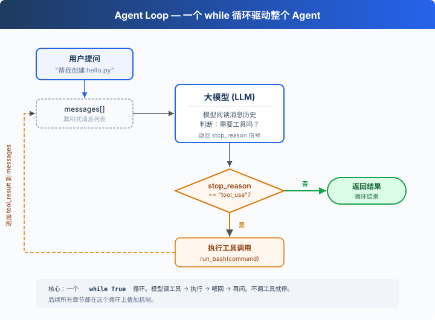

s01: Agent Loop — 一个循环就够了
"One loop & Bash is all you need" — 一个工具 + 一个循环 = 一个 Agent。 Harness 层: 循环 — 模型与真实世界的第一道连接。
On this page
s01 → s02 → s03 → s04 → ... → s20
"One loop & Bash is all you need" — 一个工具 + 一个循环 = 一个 Agent。
Harness 层: 循环 — 模型与真实世界的第一道连接。
问题
你提出了一个问题给大模型：“帮我读取下我的目录下有哪些文件，并且执行XXX.py”。
模型能输出一条 bash 命令，但输出完了就停了，它不会自己跑，也不会看到结果后继续推理。
你可以手动跑一遍，把输出粘贴回对话框，让它接着干。下一个命令出来，你再跑一遍、再贴回去。
每一个来回，你都在做中间层。而把它自动化，就是这一章要做的事。
解决方案

一个 while True 循环，模型调用工具就继续，不调用就停。整个过程只有两个信号：
| 信号 | 含义 | 循环动作 |
|---|---|---|
stop_reason == "tool_use" |
模型举手说"我要用工具" | 执行 → 结果喂回去 → 继续 |
stop_reason != "tool_use" |
模型说"我做完了" | 退出循环 |
工作原理
将这个过程翻译成代码。分步来看：
第 1 步：把用户的问题作为第一条消息。
messages = [{"role": "user", "content": query}]
第 2 步：将消息和工具定义一起发给 LLM。
response = client.messages.create(
model=MODEL, system=SYSTEM, messages=messages,
tools=TOOLS, max_tokens=8000,
)
第 3 步：追加模型回答，检查它是否调了工具。没调 → 结束。
messages.append({"role": "assistant", "content": response.content})
if response.stop_reason != "tool_use":
return
第 4 步：执行模型要求的工具，收集结果。
results = []
for block in response.content:
if block.type == "tool_use":
output = run_bash(block.input["command"])
results.append({
"type": "tool_result",
"tool_use_id": block.id,
"content": output,
})
第 5 步：把工具结果作为新消息追加，回到第 2 步。
messages.append({"role": "user", "content": results})
组装为一个完整函数：
def agent_loop(messages):
while True:
response = client.messages.create(
model=MODEL, system=SYSTEM, messages=messages,
tools=TOOLS, max_tokens=8000,
)
messages.append({"role": "assistant", "content": response.content})
if response.stop_reason != "tool_use":
return
results = []
for block in response.content:
if block.type == "tool_use":
output = run_bash(block.input["command"])
results.append({
"type": "tool_result",
"tool_use_id": block.id,
"content": output,
})
messages.append({"role": "user", "content": results})
不到 30 行，这就是最小可运行的 agent harness 内核。它不是智能本身，而是让模型能持续行动的最小运行框架，模型负责决策（要不要调工具、调哪个），harness 负责执行（调了就跑、结果喂回去）。后面 18 个章节都在这个循环上叠加机制，循环本身始终不变。
试一下
教学 demo 提示：代码会执行模型生成的 shell 命令。建议在一个临时测试目录中运行，避免影响你的项目文件。s03 会讲真正的权限系统。
准备（首次运行）：
pip install -r requirements.txt
cp .env.example .env
# 编辑 .env，填入 ANTHROPIC_API_KEY 和 MODEL_ID
运行：
python s01_agent_loop/code.py
试试这些 prompt：
Create a file called hello.py that prints "Hello, World!"List all Python files in this directoryWhat is the current git branch?
观察重点：模型什么时候调用工具（循环继续），什么时候不调用（循环结束）？
接下来
现在模型手里只有 bash 一个工具，读文件要 cat，写文件要 echo ... >，找个文件要 find，又丑又容易出错。
s02 Tool Use → 给它 5 个真正的工具，会发生什么？模型会不会一次调用多个工具？几个工具同时跑会不会互相踩？
深入 CC 源码
> 以下内容基于 CC 源码 `src/query.ts`（1729 行）的核查。核心差异就两个：CC 不看 `stop_reason` 字段而是检查内容里有没有 tool_use 块（因为流式响应中 stop_reason 不可靠）；CC 有更多的退出路径和恢复策略做生产级保护。 **教学版的 30 行 `while True` 就是 CC 1729 行的核心。** 下面每一项都是在这个核心上叠加的保护机制。一、循环结构差异
教学版检查 `response.stop_reason`。CC 不把它作为循环继续的唯一依据——流式响应中 `stop_reason` 可能还没更新但内容里已经有 `tool_use` 块了。CC 用 `needsFollowUp` 标志：接收到流式消息时（`query.ts:830-834`），只要检测到 `tool_use` 块就设为 `true`；`QueryEngine.ts` 会从 `message_delta` 捕获真实 `stop_reason` 用于其他逻辑，但 query loop 本身靠 `needsFollowUp` 决定是否继续。// query.ts:554-558
// stop_reason === 'tool_use' is unreliable.
// Set during streaming whenever a tool_use block arrives.
let needsFollowUp = false